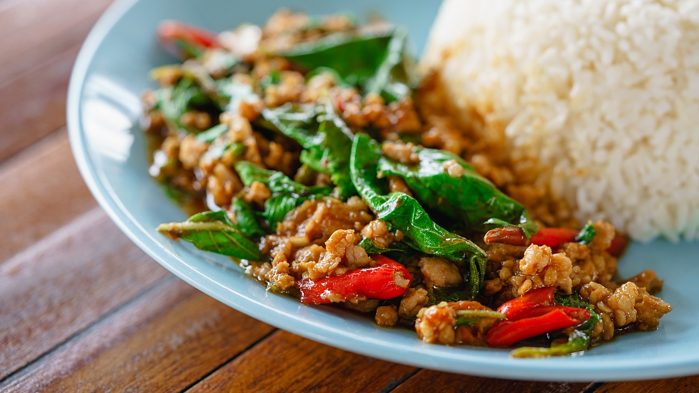

Khao Pad (Thai Fried Rice)

Description
Khao Pad is a classic Thai dish made by stir-frying cooked jasmine rice with meat, egg, garlic, and savory seasonings,
creating a fragrant, comforting meal typically served with cucumber slices, lime, and chili fish sauce.
Ingredients
- 2 cups of cold, day-old cooked jasmine rice
- 150–200 grams of sliced pork, chicken, or shrimp
- 2 large eggs
- 2–3 cloves of minced garlic
- 2 tbsp vegetable oil
- 1–2 tbsp seasoning sauce or light soy sauce
- ½–1 tbsp oyster sauce
- 1 tsp sugar
- ¼ tsp ground white pepper
- 2 stalks of chopped spring onions
- ¼ cup diced onion or tomato (optional)
Steps
- Heat oil in a wok or pan over medium-high heat and stir-fry the minced garlic until fragrant.
- Add the meat and stir-fry until nearly cooked through, then push it to the side of the pan.
- Crack the eggs into the empty space, scramble gently until mostly set, and mix with the meat.
- Add the cold rice, breaking up any clumps, and toss everything together over high heat.
- Season with soy sauce, oyster sauce, sugar, and white pepper, stir-frying until the rice is well-coated and slightly smoky.
- Toss in the chopped spring onions (and tomatoes, if using), stir briefly, then turn off the heat and serve with lime and cucumber.
Home